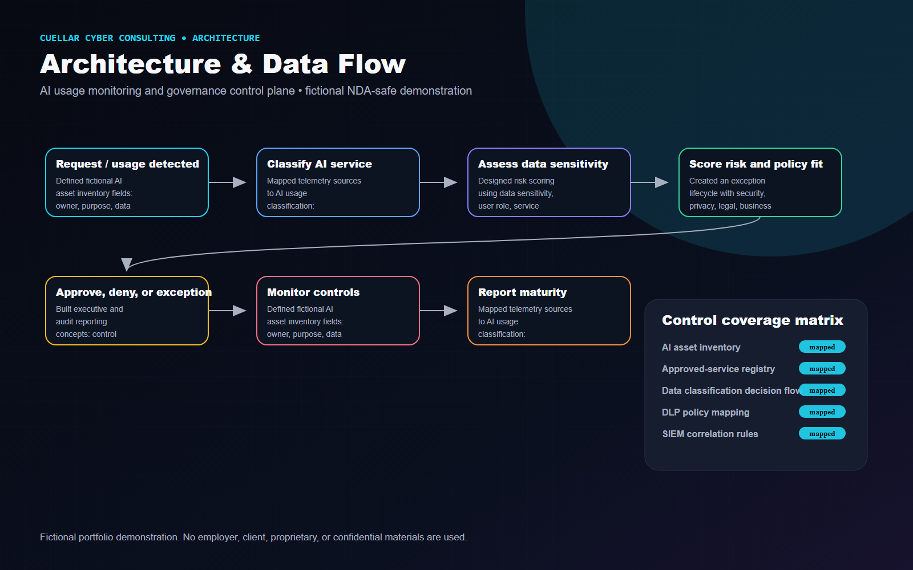
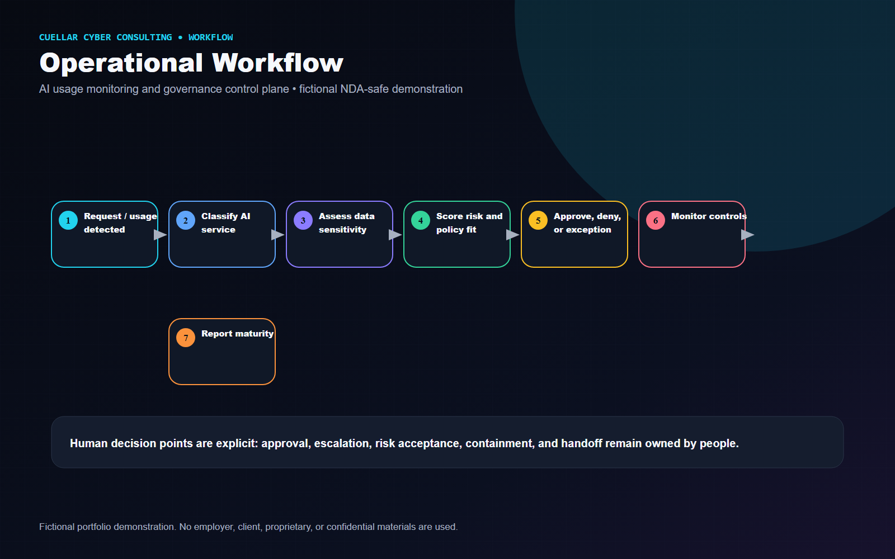
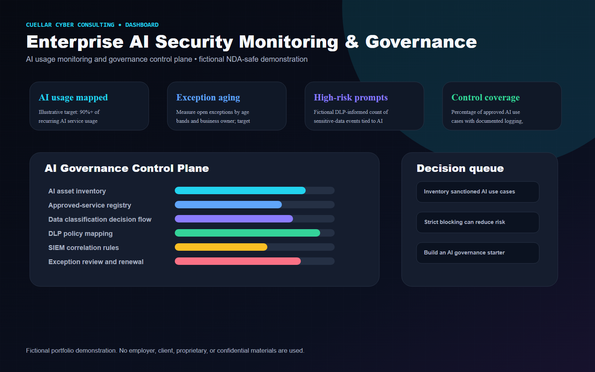

Executive Summary
Modeled an AI security operating system that connects telemetry, risk scoring, exception workflows, and executive reporting without blocking responsible adoption.
Fictional Client Profile
Northstar Mutual, a fictional regulated financial services enterprise piloting GenAI assistants across legal, operations, and engineering teams.
Client Challenge and Business Risk
Client situation
A fictional regulated enterprise lacked centralized visibility into approved and unapproved AI usage, creating governance blind spots, inconsistent exception handling, and limited evidence for audit and risk reporting.
Business risk
Sensitive data could move into unsanctioned AI tools, approved AI use cases could lack consistent review evidence, and executives would have no reliable view of AI risk acceptance, exception aging, or control maturity.
Project objectives
- Inventory sanctioned AI use cases and model-adjacent assets using fictional data.
- Classify approved, tolerated, and unsanctioned AI activity from identity, web, endpoint, SaaS, and DLP telemetry.
- Create a governance workflow for approvals, exceptions, renewals, and evidence collection.
- Translate technical signals into leadership metrics aligned to NIST AI RMF concepts.
Constraints and assumptions
- Demonstration uses only fictional organizations, metrics, dashboards, and generic security architecture.
- Monitoring supports governance and responsible enablement; it is not positioned as a blanket AI blocking program.
- NIST AI RMF is used as a risk-management reference, not as a compliance guarantee.
- Model provider capabilities, DLP coverage, and SaaS audit depth vary by environment and require discovery.
Technical Approach
- Defined fictional AI asset inventory fields: owner, purpose, data class, model/service, integration pattern, approval status, and renewal date.
- Mapped telemetry sources to AI usage classification: identity, secure web gateway, endpoint, DLP, SaaS audit, API gateway, CASB/SSE, ticketing, and SIEM.
- Designed risk scoring using data sensitivity, user role, service approval status, volume, exception age, and control coverage.
- Created an exception lifecycle with security, privacy, legal, business owner, and AI governance decision points.
- Built executive and audit reporting concepts: control coverage, exception aging, high-risk usage trend, governance maturity, and action register.
Architecture Diagram

Operational Workflow

Security Controls
- AI asset inventory
- Approved-service registry
- Data classification decision flow
- DLP policy mapping
- SIEM correlation rules
- Exception review and renewal
- Role-based reporting
- Control evidence repository
Technologies and Frameworks
Deliverables
- AI security architecture diagram
- Sanctioned vs. unsanctioned AI workflow
- AI asset inventory model
- Executive AI risk dashboard mockup
- Control coverage matrix
- Governance roles and responsibilities view
- NIST AI RMF-aligned reporting narrative

Business Outcomes and Success Measures
Metrics are labeled as illustrative example targets or proposed success measures. They are not real accomplishments.
| Measure | How it would be interpreted |
|---|---|
| AI usage mapped | Illustrative target: 90%+ of recurring AI service usage associated to owner and approval status. |
| Exception aging | Measure open exceptions by age bands and business owner; target no stale high-risk exceptions. |
| High-risk prompts | Fictional DLP-informed count of sensitive-data events tied to AI services, normalized by user population. |
| Control coverage | Percentage of approved AI use cases with documented logging, data handling, owner, and review cadence. |
Tradeoffs and Design Decisions
- Strict blocking can reduce risk quickly but may push usage underground; the design favors visibility, tiered controls, and explicit approvals.
- Deep prompt inspection may improve detection but raises privacy and data-minimization questions; the mockup separates metadata risk from content review.
- Executive metrics need trend and decision context, not raw event volume.
Lessons Learned
- AI security governance becomes practical when monitoring, approvals, and reporting share the same inventory and risk vocabulary.
- The highest-value dashboard is not a heatmap; it is a decision queue showing what must be approved, remediated, renewed, or escalated.
Potential Next Phase
Build an AI governance starter kit: intake form, risk-tiering rubric, control checklist, reporting cadence, and implementation backlog.
Fictional and NDA-Safe Disclaimer
Fictional portfolio demonstration. No employer, client, proprietary, or confidential materials are used. The content does not include or imitate employer dashboards, logos, terminology, real data, real incident details, internal detections, internal code, or confidential workflows.